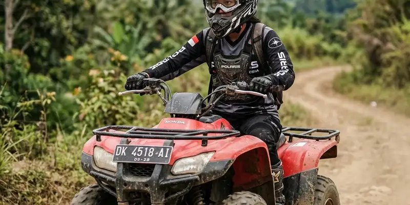

Keselamatan offroad bagi pemula dapat dijaga dengan memilih jalur sesuai kemampuan, menggunakan perlengkapan pelindung yang tepat, dan selalu didampingi pemandu berpengalaman selama aktivitas berlangsung.
Ringkasan Inti
- Pemula sebaiknya memulai dari jalur offroad dengan tingkat kesulitan rendah.
- Perlengkapan keselamatan seperti helm dan sabuk pengaman wajib digunakan sesuai jenis kendaraan.
- Pendampingan pemandu berpengalaman membantu mengurangi risiko kecelakaan.
- Memahami kondisi kendaraan sebelum berangkat menjadi langkah penting yang sering diabaikan.
Bagaimana Tips Keselamatan Berkendara Offroad bagi Pemula?
Tips keselamatan berkendara offroad bagi pemula meliputi memilih jalur yang sesuai kemampuan, menggunakan perlengkapan pelindung, mengikuti arahan pemandu, dan memahami batas kemampuan diri selama aktivitas berlangsung.
Pemula yang baru pertama kali mencoba offroad sebaiknya tidak langsung memilih jalur dengan tingkat kesulitan tinggi. Mulailah dari jalur yang dirancang khusus untuk pemula, biasanya tersedia di lokasi wisata offroad yang menyediakan paket sesuai tingkat pengalaman peserta. Selain itu, selalu ikuti arahan pemandu atau instruktur, terutama terkait teknik dasar mengemudi di medan tidak rata.
Apa Saja Perlengkapan Keselamatan yang Wajib Disiapkan?
Perlengkapan keselamatan yang wajib disiapkan untuk aktivitas offroad meliputi helm, sabuk pengaman, sepatu tertutup, serta perlengkapan pelindung tambahan sesuai jenis kendaraan yang digunakan.
- Helm, terutama untuk aktivitas offroad menggunakan motor trail atau ATV, guna melindungi kepala dari benturan.
- Sabuk pengaman, yang wajib digunakan saat berkendara menggunakan mobil jip untuk mengantisipasi guncangan di medan berat.
- Sepatu tertutup dan pakaian pelindung, yang membantu melindungi kaki dan tubuh dari risiko cedera akibat medan yang tidak rata.
- Sarung tangan, yang membantu menjaga cengkeraman tangan pada kemudi atau setang kendaraan selama perjalanan.

Penggunaan perlengkapan keselamatan seperti helm, kacamata pelindung, dan sarung tangan sangat krusial untuk melindungi diri dari risiko cedera.
Apa yang Harus Dihindari Saat Pertama Kali Mencoba Offroad?
Hal yang harus dihindari saat pertama kali mencoba offroad meliputi memilih jalur terlalu sulit, mengabaikan arahan pemandu, dan memaksakan kecepatan tinggi tanpa memahami kondisi medan.
- Hindari memilih jalur dengan tingkat kesulitan tinggi sebelum memiliki pengalaman yang cukup.
- Jangan mengabaikan arahan dan instruksi dari pemandu selama aktivitas berlangsung.
- Hindari memacu kendaraan terlalu cepat, terutama di medan yang belum dikenali dengan baik.
- Jangan mengabaikan kondisi cuaca, karena medan offroad dapat berubah signifikan saat hujan turun.
Kesimpulan
Keselamatan menjadi prioritas utama saat mencoba aktivitas offroad, terutama bagi pemula yang belum memiliki banyak pengalaman. Pilih jalur sesuai kemampuan, gunakan perlengkapan pelindung yang tepat, dan selalu ikuti arahan pemandu agar aktivitas offroad tetap aman dan menyenangkan.
FAQ Keselamatan Offroad Pemula
Pendampingan pemandu sangat disarankan bagi pemula karena membantu memberikan arahan teknik dasar dan mengurangi risiko kecelakaan di medan yang belum dikenali.
Ya, kebutuhan perlengkapan dapat bervariasi tergantung jenis kendaraan, misalnya helm lebih diutamakan untuk motor trail dan ATV, sementara sabuk pengaman diutamakan untuk mobil jip.
Sebaiknya segera hentikan kendaraan dengan aman, informasikan kondisi kepada pemandu atau anggota tim lain, dan hindari memaksakan kendaraan melanjutkan perjalanan jika terjadi kerusakan teknis.